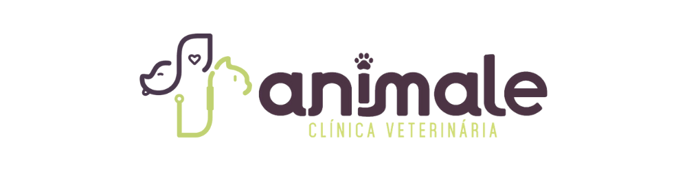

Consultas
Atendimento próximo, atento e individualizado para cães e gatos.
→
Agendar consulta ↗CLÍNICA VETERINÁRIA
Uma clínica feita para acolher, prevenir e cuidar — com ciência, carinho e uma equipe que ama o que faz.

PRECISA DE AJUDA?


NOSSA HISTÓRIA
Nascemos de um propósito simples, mas profundamente transformador: garantir que nenhum tutor em Colatina e região precise escolher o relógio antes de buscar socorro para quem ama.
A Animale Clínica e Hospital Veterinário foi fundada para unir alta complexidade médica e acolhimento humanizado em uma mesma experiência de cuidado.
O que começou com um atendimento clínico dedicado se tornou uma rede integrada de saúde animal, presente na história de centenas de famílias que encontraram suporte técnico e emocional quando mais precisaram.
O QUE FAZEMOS
Do acompanhamento de rotina aos momentos que pedem atenção imediata, estamos prontos para cuidar.
Atendimento próximo, atento e individualizado para cães e gatos.
→Proteção em dia para uma vida longa, segura e cheia de descobertas.
→Diagnósticos ágeis e precisos para decisões mais tranquilas.
→Profissionais qualificados para cada necessidade do seu pet.
→Procedimentos seguros, com orientação cuidadosa antes e depois da cirurgia.
→Centro cirúrgico e acompanhamento atento em cada etapa do procedimento.
→Monitoramento e conforto para o seu pet se recuperar com tranquilidade.
→Saúde bucal preventiva e tratamentos para sorrisos mais saudáveis.
→NOSSA EQUIPE
Uma equipe multidisciplinar, pronta para acompanhar cada história com conhecimento e gentileza.
Conheça a equipe →
QUEM VIVE, CONTA
“A equipe nos recebeu com uma calma incrível. Meu cachorro foi cuidado com muito carinho em um momento em que eu estava bem preocupada.”
“A Animale transformou a experiência de ir ao veterinário. É bonito ver o quanto eles realmente se importam com cada pet.”
“Estrutura impecável, atendimento claro e uma equipe muito preparada. A gente se sente em casa.”
ONDE ESTAMOS
Escolha a unidade mais conveniente e trace sua rota com poucos cliques.
HOSPITAL VETERINÁRIO — 24H
CLÍNICA VETERINÁRIA
FALE COM A ANIMALE
Preencha os dados e abriremos uma conversa no WhatsApp já com sua solicitação organizada.
🔒 Nenhuma informação é salva neste site.
UNIDADES ANIMALE
HOSPITAL VETERINÁRIO — 24H
Animale Hospital VeterinárioR. Antônio Engrácio, 655CLÍNICA VETERINÁRIA
Animale Clínica VeterináriaR. Oséias Amorim, 30